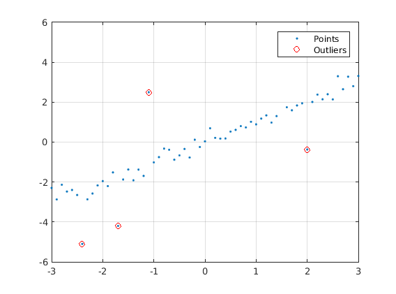
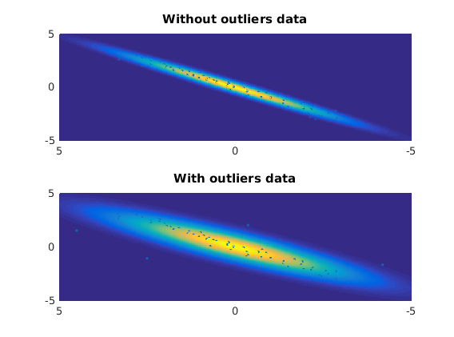
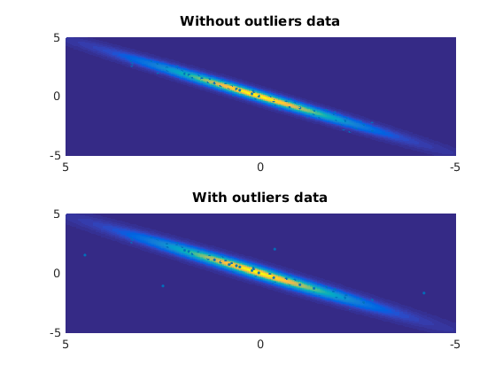

Contents
Let's generate a data with some data with outlier!
clear all
rng(4)
x = -3:0.1:3;
y = x + 0.3*randn(size(x));
outliers_nb = 5;
idx = randperm(length(x));
y_outlier = y;
y_outlier(idx(1:outliers_nb)) = y(idx(1:outliers_nb)) + 3*sign(randn(size(idx(1:outliers_nb))));
figure(1)
plot(x, y_outlier, '.')
hold on
plot(x(idx(1:outliers_nb)), y_outlier(idx(1:outliers_nb)), 'ro')
legend('Points', 'Outliers')
grid
train_set = [x', y'];
train_set_outlier = [x', y_outlier'];

Fitting a Gaussian - Non outliear data
number_of_components = 1;
mix_mean = zeros(1, 2, number_of_components);
mix_mean(:, :, 1) = 0;
mix_prob = 1;
mix_cov = zeros(size(train_set, 2), size(train_set, 2), number_of_components);
mix_cov(:, :, 1) = cov(train_set);
[mix_prob, mix_cov, mix_mean] = gmm_em(train_set, mix_prob, mix_cov, mix_mean, 0, 1e3);
Fitting a Gaussian - Outliear data
number_of_components = 1;
mix_mean_out = zeros(1, 2, number_of_components);
mix_mean_out(:, :, 1) = 0;
mix_prob_out = 1;
mix_cov_out(:, :, 1) = cov(train_set);
[mix_prob_out, mix_cov_out, mix_mean_out] = gmm_em(train_set_outlier, mix_prob_out, mix_cov_out, mix_mean_out, 0, 1e3);
Plotting the result!
[x_grid, y_grid] = meshgrid(-5:0.05:5);
g_grid = [x_grid(:), y_grid(:)];
mv_gaussian = 0;
mv_gaussian_out = 0;
for i = 1:number_of_components
mv_gaussian = mv_gaussian + mix_prob(i)*mvgauss(g_grid, mix_mean(:, :, i), mix_cov(:, :, i));
mv_gaussian_out = mv_gaussian_out + mix_prob_out(i)*mvgauss(g_grid, mix_mean_out(:, :, i), mix_cov_out(:, :, i));
end
mv_gaussian_grid = reshape(mv_gaussian, size(x_grid));
mv_gaussian_grid_out = reshape(mv_gaussian_out, size(x_grid));
[posterior_prob, posterior] = gmm_posterior(train_set, mix_prob, mix_cov, mix_mean);
[posterior_prob_out, posterior_out] = gmm_posterior(train_set, mix_prob_out, mix_cov_out, mix_mean_out);
figure(2)
subplot(2, 1, 1)
plot3(train_set(:, 1), train_set(:, 2), sum(posterior, 2),'.')
hold on
mesh(x_grid, y_grid, mv_gaussian_grid)
title('Without outliers data')
xlim([-5 5])
ylim([-5 5])
view(-90, 90)
grid on
subplot(2, 1, 2)
plot3(train_set_outlier(:, 1), train_set_outlier(:, 2), sum(posterior_out, 2),'.')
hold on
mesh(x_grid, y_grid, mv_gaussian_grid_out)
title('With outliers data')
xlim([-5 5])
ylim([-5 5])
view(-90, 90)
grid on

Fitting a T Student - Non outliear data
number_of_components = 1;
mix_mean = zeros(1, 2, number_of_components);
mix_mean(:, :, 1) = 0;
mix_prob = 1;
mix_cov(:, :, 1) = cov(train_set);
v = 3;
[mix_prob, mix_cov, mix_mean] = tstudentmm_em(train_set, mix_prob, mix_cov, mix_mean, v, 0, 1e3);
Fitting a T Student - Outliear data
number_of_components = 1;
mix_mean_out = zeros(1, 2, number_of_components);
mix_mean_out(:, :, 1) = 0;
mix_prob_out = 1;
mix_cov_out(:, :, 1) = cov(train_set);
[mix_prob_out, mix_cov_out, mix_mean_out] = tstudentmm_em(train_set_outlier, mix_prob_out, mix_cov_out, mix_mean_out, v, 0, 1e3);
Plotting the result!
[x_grid, y_grid] = meshgrid(-5:0.05:5);
g_grid = [x_grid(:), y_grid(:)];
mv_tstudent = 0;
mv_tstudent_out = 0;
for i = 1:number_of_components
g_grid_avg = g_grid - repmat(mix_mean(:, :, i), size(g_grid ,1), 1);
scale = sqrt(diag(mix_cov(:,:,i)))';
g_grid_scale = g_grid_avg./repmat(scale, size(g_grid,1), 1);
mv_tstudent = mv_tstudent + mix_prob(i)*mvtpdf(g_grid_scale, mix_cov(:, :, i), v);
mv_tstudent_out = mv_tstudent_out + mix_prob_out(i)*mvtpdf(g_grid_scale, mix_cov_out(:, :, i), v);
end
mv_tstudent = mv_tstudent/prod(scale);
mv_tstudent_out = mv_tstudent_out/prod(scale);
mv_tstudent_grid = reshape(mv_tstudent, size(x_grid));
mv_tstudent_grid_out = reshape(mv_tstudent_out, size(x_grid));
[posterior_prob, posterior] = tstudentmm_posterior(train_set, mix_prob, mix_cov, mix_mean, v);
[posterior_prob_out, posterior_out] = tstudentmm_posterior(train_set, mix_prob_out, mix_cov_out, mix_mean_out, v);
figure(3)
subplot(2, 1, 1)
plot3(train_set(:, 1), train_set(:, 2), sum(posterior, 2),'.')
hold on
mesh(x_grid, y_grid, mv_tstudent_grid)
title('Without outliers data')
xlim([-5 5])
ylim([-5 5])
view(-90, 90)
grid on
subplot(2, 1, 2)
plot3(train_set_outlier(:, 1), train_set_outlier(:, 2), sum(posterior_out, 2),'.')
hold on
mesh(x_grid, y_grid, mv_tstudent_grid_out)
title('With outliers data')
xlim([-5 5])
ylim([-5 5])
view(-90, 90)
grid on

close all